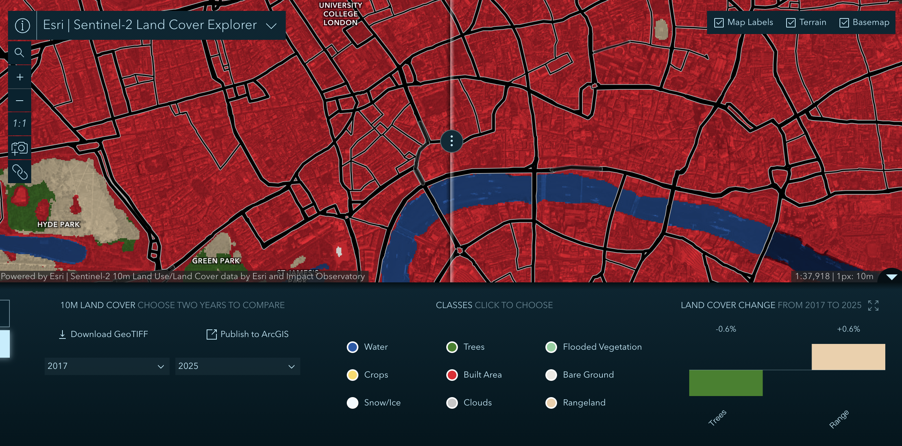

Week 06 · October 2026
Land Cover, Then and Now
The question
How has land cover in central London changed between 2017 and 2025, and what kinds of urban change cannot be represented by land-cover classes? At 265 Strand, a former commercial building was transformed into NYU London's academic centre. This change raises a related question: how does the distribution of land-cover classes reflect physical change, while leaving changes in building use and the people who benefit from redevelopment less visible?
The data
I used the Sentinel-2 10 m Land Use/Land Cover Time Series, produced by Esri and Impact Observatory, to compare 2017 and 2025. Its native spatial resolution is 10 m per pixel. The Esri item is provided under the Esri Master License Agreement, while the source land-cover data is licensed under Creative Commons Attribution 4.0 International (CC BY 4.0). I also compared 2024 and 2025 as a third-date check.
The method
I selected the area around 265 Strand in central London and used the Land Cover Explorer in SWIPE mode. I kept the same map extent, native resolution (1 pixel = 10 m), and land-cover rendering for the 2017–2025 comparison. I then changed the earlier date to 2024 and compared it with 2025, keeping the map view unchanged. The change panel reported a 0.6% decrease in Trees and a 0.6% increase in Rangeland for 2017–2025. For 2024–2025, it reported a 0.7% decrease in Trees, a 0.4% increase in Built Area, and a 0.4% increase in Rangeland.
Open the interactive land-cover comparison: 2017 vs 2025
The evidence

What I found
The 2017–2025 change panel reports a decrease in Trees and an increase in Rangeland within the selected extent. The shorter 2024–2025 comparison shows decreases in Trees and increases in both Built Area and Rangeland. The pattern therefore differs between the two time periods. These figures describe the selected map extent, not changes at 265 Strand alone.
A separate change that the land-cover classes cannot directly show is the conversion of the commercial building at 265 Strand into NYU London's academic centre, which opened in 2024. The building may remain classified as Built Area even though its function has changed. This is a suspected mismatch between the information represented by the classification and the wider history of the site, rather than a change demonstrated by the land-cover values themselves.
What this does not show
I am using the Built Area class to stand for developed urban land, and it might fail to represent changes in building function because the classification does not distinguish commercial offices from university facilities. This is a limitation of the class definitions, not necessarily a classification error.